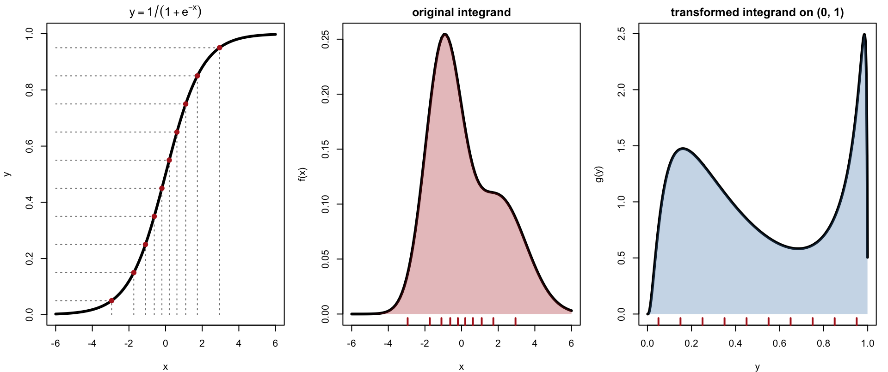
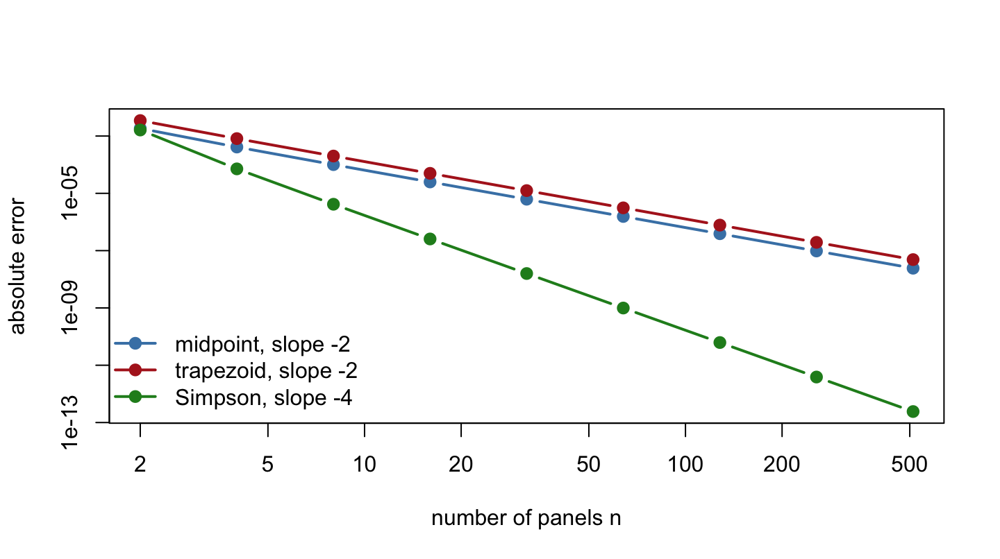
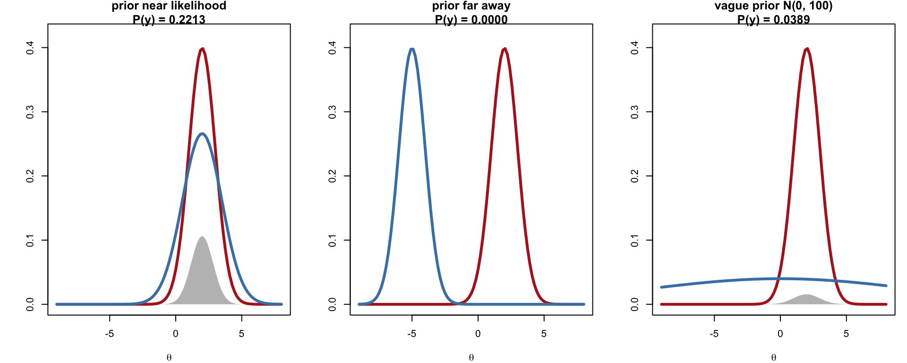
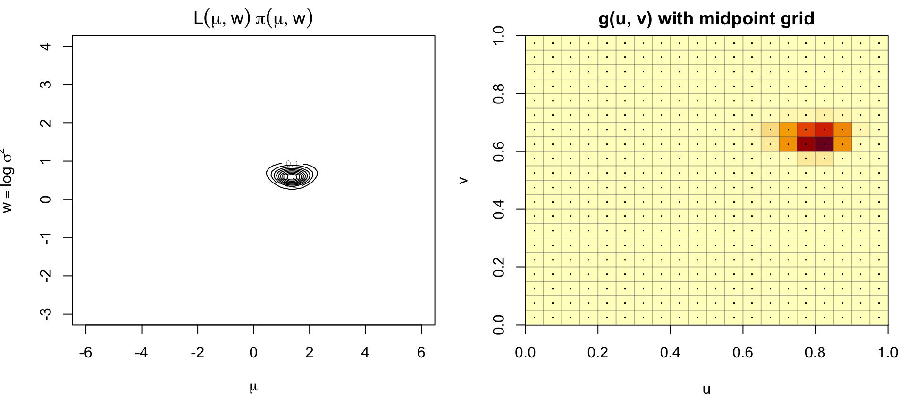
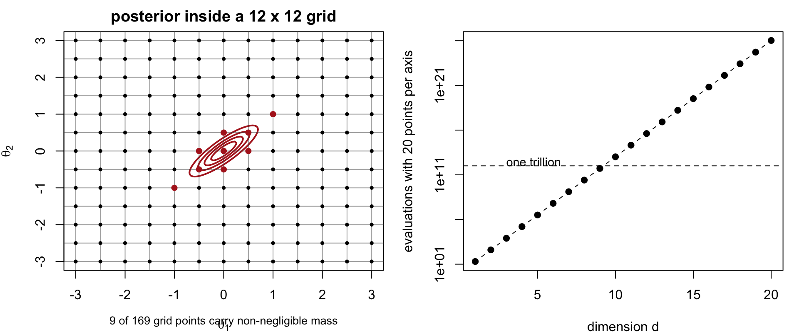

Code
library(metRology)library(metRology)The previous chapter laid out the Bayesian framework: a prior \(\pi(\theta)\), a likelihood \(L(\theta)\), and a posterior \(P(\theta\mid\mathbf y)\propto f(\theta)=L(\theta)\pi(\theta)\) known only up to its normalizing constant, the marginal likelihood \(P(\mathbf y)=\int f(\theta)\,d\theta\). Outside the conjugate examples there, every posterior summary — that normalizing constant, a posterior mean, a credible interval, a predictive probability — is an area under \(f\) with no closed form: a tail probability, a posterior expectation, or a normalizing constant. (The two chapters before that found the mode of a log-likelihood or log-posterior by optimization instead — useful, but a different problem.) This chapter develops numerical quadrature — approximating an integral by a weighted sum of function values at a finite set of points — and applies it to the central example of the rest of the book, the marginal likelihood of a Bayesian model. The next chapter (Laplace’s method) revisits the same example with a method based on the mode instead of a grid.
The goal is to approximate \[ A = \int_a^b f(x)\,dx \] for finite \(a,b\) by evaluating \(f\) at \(n\) points \(x_1,\ldots,x_n\) and forming a weighted sum \[ \tilde A_n = \sum_{i=1}^n w_i\, f(x_i). \] The quadrature rules below differ only in how the points and weights are chosen. Typical statistical uses are probabilities \(P(a < X < b)\), expectations \(E[h(X)]\), and normalizing constants such as the marginal likelihood \(P(y) = \int L(\theta)\pi(\theta)\,d\theta\) in Bayesian inference.
A grid needs a finite interval, so when the natural range of integration is \((-\infty,\infty)\) we first change variables. The logistic function maps \(x \in (-\infty,\infty)\) to \(y \in (0,1)\), \[ y = \frac{1}{1+e^{-x}}, \qquad x = t(y) = \log\frac{y}{1-y}, \qquad t'(y) = \frac{1}{y(1-y)}, \] and the standard change-of-variables identity gives \[ \int_{-\infty}^{\infty} f(x)\,dx = \int_0^1 f\big(t(y)\big)\,t'(y)\,dy = \int_0^1 g(y)\,dy, \qquad g(y) = \frac{f\big(\log\frac{y}{1-y}\big)}{y(1-y)}. \] Any quadrature rule for a finite interval now applies to \(g\) on \((0,1)\). Two consequences matter later in the chapter:
For a half-line \((0,\infty)\) the same idea applies with \(x = -\log(1-y)\) or \(x = y/(1-y)\) in place of the logistic map.
par(mfrow = c(1, 3), mar = c(4, 4, 2, 1))
curve(1 / (1 + exp(-x)), -6, 6, lwd = 3, xlab = "x", ylab = "y",
main = expression(y == 1 / (1 + e^-x)))
ys <- seq(0.05, 0.95, by = 0.1)
xs <- log(ys / (1 - ys))
segments(xs, 0, xs, ys, lty = 3, col = "gray50")
segments(-6, ys, xs, ys, lty = 3, col = "gray50")
points(xs, ys, pch = 19, col = "firebrick")
f <- function(x) 0.6 * dnorm(x, -1, 1) + 0.4 * dnorm(x, 2, 1.5)
curve(f, -6, 6, lwd = 3, xlab = "x", ylab = "f(x)", main = "original integrand")
xs2 <- seq(-6, 6, length.out = 400)
polygon(c(xs2, rev(xs2)), c(f(xs2), rep(0, 400)), col = adjustcolor("firebrick", 0.3), border = NA)
rug(xs, col = "firebrick", lwd = 2)
g <- function(y) f(log(y / (1 - y))) / (y * (1 - y))
curve(g, 0.001, 0.999, lwd = 3, n = 501, xlab = "y", ylab = "g(y)",
main = "transformed integrand on (0, 1)")
ys2 <- seq(0.001, 0.999, length.out = 400)
polygon(c(ys2, rev(ys2)), c(g(ys2), rep(0, 400)), col = adjustcolor("steelblue", 0.3), border = NA)
rug(ys, col = "firebrick", lwd = 2)
For \(X\) with density \(\varphi\), e.g. \(\varphi(x) = \frac{1}{\sqrt{2\pi}}e^{-x^2/2}\), \[ P(a < X < b) = \int_a^b \varphi(x)\,dx = \int_{-\infty}^{\infty} \varphi^{(c)}(x)\,dx, \qquad \varphi^{(c)}(x) = \varphi(x)\,I(a < x < b). \] Either integrate \(\varphi\) directly over the finite interval \([a,b]\), or integrate the truncated function \(\varphi^{(c)}\) over the whole line, letting the indicator do the cutting. The second view is the more useful one: the same machinery — transform to \((0,1)\), apply a quadrature rule — computes \(P(X \in S)\) for an arbitrary set \(S\) and, more generally, \(E[h(X)] = \int h(x)\varphi(x)\,dx\) for an arbitrary \(h\).
All three rules below partition \([a,b]\) into \(n\) panels of width \(h_n = (b-a)/n\) and differ only in how \(f\) is approximated within each panel.
Approximate \(f\) on each panel by its value at the panel’s midpoint (a constant, i.e. a rectangle): \[ \tilde A_n = h_n \sum_{i=1}^n f\!\Big(a + \big(i - \tfrac12\big)h_n\Big). \] For smooth \(f\) the error is \(A - \tilde A_n = \dfrac{(b-a)h_n^2}{24}f''(\xi) = O(h_n^2)\) for some \(\xi \in (a,b)\). The rule never evaluates \(f\) at the panel edges, so in particular it never touches \(a\) or \(b\) — convenient when \(f\) is singular or undefined at the endpoints, exactly the situation created by the logistic transform above.
Approximate \(f\) on \([x_{i-1},x_i]\) by the straight line through the two endpoint values, so each panel contributes a trapezoid, \(\tfrac12[f(x_{i-1})+f(x_i)](x_i-x_{i-1})\). Summing over panels, interior points are shared by two neighbouring panels and each contributes once (not twice) to the total: \[ \tilde A_n = \tfrac12 h_n\big[f(a) + f(b)\big] + h_n \sum_{i=1}^{n-1} f(a+ih_n). \] The error is \(A - \tilde A_n = -\dfrac{(b-a)h_n^2}{12}f''(\xi) = O(h_n^2)\) — the same order as the midpoint rule, but with twice the constant and the opposite sign. It is exact for linear \(f\).
Take \(n = 2m\) even. On each pair of panels \([x_0,x_1]\) with \(x_1-x_0=2h_n\), replace \(f\) by the quadratic through the two endpoints and the midpoint; integrating that quadratic exactly gives \[ \int_{x_0}^{x_1} f(x)\,dx \approx \frac{x_1-x_0}{6} \Big[f(x_0) + 4f\big(\tfrac{x_0+x_1}{2}\big) + f(x_1)\Big]. \] Summing over the \(m\) panel-pairs, with each even interior point shared by two pairs, \[ \tilde A_{2m} = \frac{h_n}{3}\left[f(a) + f(b) + 4\sum_{i=1}^{m} f\big(a+(2i-1)h_n\big) + 2\sum_{i=1}^{m-1} f\big(a+2ih_n\big)\right]. \] The error is \(A - \tilde A_{2m} = -\dfrac{(b-a)h_n^4}{180}f^{(4)}(\xi) = O(h_n^4)\), two orders faster than the other two rules, and Simpson’s rule is exact for cubics. It can also be written as a weighted average of the other two rules on the same panel pair: \(\text{Simpson} = \tfrac23\,\text{midpoint} + \tfrac13\,\text{trapezoid}\).
Table 9.1 summarizes the three rules.
| Rule | Approximates \(f\) on a panel by | Uses endpoints? | Error | Exact for |
|---|---|---|---|---|
| Midpoint | constant at panel midpoint | no | \(O(h_n^2)\) | linear |
| Trapezoidal | line through panel endpoints | yes | \(O(h_n^2)\) | linear |
| Simpson | quadratic through 3 points (2 panels) | yes | \(O(h_n^4)\) | cubic |
All three rules are one line of vectorized R each — no explicit loop over panels is needed:
midpoint <- function(f, a, b, n) {
h <- (b - a) / n
h * sum(f(a + (seq_len(n) - 0.5) * h))
}
trapezoid <- function(f, a, b, n) {
h <- (b - a) / n
x <- a + (0:n) * h
h * (sum(f(x)) - 0.5 * (f(a) + f(b)))
}
simpson <- function(f, a, b, n) {
stopifnot(n %% 2 == 0)
h <- (b - a) / n
x <- a + (0:n) * h
h / 3 * sum(f(x) * c(1, rep(c(4, 2), n / 2 - 1), 4, 1))
}We check all three against a case with a known answer, \(P(0.5 < Z < 2)\) for \(Z \sim N(0,1)\):
exact <- pnorm(2) - pnorm(0.5)
errs <- sapply(list(midpoint = midpoint, trapezoid = trapezoid, simpson = simpson),
function(rule) rule(dnorm, 0.5, 2, 10) - exact)
knitr::kable(t(errs), digits = 10, row.names = FALSE)pnorm.
| midpoint | trapezoid | simpson |
|---|---|---|
| -6.4163e-05 | 0.0001280126 | -1.6895e-06 |
With only 10 panels, Simpson’s rule is already accurate to about \(10^{-7}\), several orders of magnitude better than the other two.
ns <- 2^(1:9)
err <- sapply(list(midpoint, trapezoid, simpson),
function(rule) sapply(ns, function(n) abs(rule(dnorm, 0.5, 2, n) - exact)))
matplot(ns, err, type = "b", log = "xy", pch = 19, lty = 1, lwd = 2,
col = c("steelblue", "firebrick", "forestgreen"),
xlab = "number of panels n", ylab = "absolute error")
legend("bottomleft", bty = "n", lwd = 2, pch = 19,
col = c("steelblue", "firebrick", "forestgreen"),
legend = c("midpoint, slope -2", "trapezoid, slope -2", "Simpson, slope -4"))
For a smooth, unimodal integrand like a normal density, Simpson’s rule dominates. The rest of this chapter nonetheless uses the midpoint rule, because the application of interest — Bayesian marginal likelihood after a logistic transform — produces an integrand that is undefined exactly at the endpoints \(0\) and \(1\), which only the midpoint rule avoids evaluating.
With likelihood \(L(\theta) = \prod_{i=1}^n P(y_i \mid \theta)\) and prior \(\pi(\theta)\), Bayes’ rule is \[ P(\theta \mid y) = \frac{L(\theta)\pi(\theta)}{P(y)}, \qquad P(y) = \int L(\theta)\pi(\theta)\,d\theta = E_\pi[L(\theta)]. \] \(P(y)\), the marginal likelihood (the likelihood averaged over the prior), is the normalizing constant of the posterior and the basis of Bayes factors for comparing models. It has no closed form outside conjugate settings, so we approximate it by quadrature. Because it depends on the whole prior — not just where the likelihood happens to be large — its value is far more sensitive to prior choice than a posterior mean is, as the next figure shows.
par(mfrow = c(1, 3), mar = c(4, 4, 2, 1))
L <- function(t) dnorm(t, 2, 1)
priors <- list(c(2, 1.5, "prior near likelihood"),
c(-5, 1, "prior far away"),
c(0, 10, "vague prior N(0, 100)"))
for (pr in priors) {
m <- as.numeric(pr[1]); s <- as.numeric(pr[2])
pi_fn <- function(t) dnorm(t, m, s)
ml <- integrate(function(t) L(t) * pi_fn(t), -Inf, Inf)$value
curve(L, -9, 8, lwd = 3, col = "firebrick", ylim = c(0, 0.42),
xlab = expression(theta), ylab = "",
main = sprintf("%s\nP(y) = %.4f", pr[3], ml))
curve(pi_fn, add = TRUE, lwd = 3, col = "steelblue")
ts <- seq(-9, 8, length.out = 300)
polygon(c(ts, rev(ts)), c(L(ts) * pi_fn(ts), rep(0, 300)),
col = adjustcolor("gray30", 0.4), border = NA)
}
integrate for a single parameter as a sanity check.
A prior centred where the likelihood is large gives a much bigger marginal likelihood than one that is far away or merely diffuse — which is exactly why \(P(y)\) is useful for comparing models, and why we must be able to compute it even when the parameter is multivariate and there is no integrate.
Let \(y_1,\ldots,y_n \mid \mu, \sigma \overset{iid}{\sim} t_\nu(\mu,\sigma)\), a location-scale \(t\) distribution with \(\nu\) degrees of freedom (the special case \(\nu=\infty\) is the normal). Reparametrize the scale as \(w = \log \sigma\) so that both parameters range over \((-\infty,\infty)\), and put independent normal priors on them: \[ \mu \sim N(\mu_0, \sigma_\mu^2), \qquad w \sim N(w_0, \sigma_w^2). \] The marginal likelihood is the two-dimensional integral \[ P(y) = \int_{-\infty}^{\infty}\!\int_{-\infty}^{\infty} L(\mu, w)\,\pi(\mu, w)\, d\mu\, dw, \qquad L(\mu,w) = \prod_{i=1}^n t_\nu\!\big(y_i;\ \mu,\ e^w\big), \] which has no closed form because the normal prior on \(w\) is not conjugate to the likelihood. We handle it with a product midpoint rule: apply the logistic transform to each of \(\mu\) and \(w\) separately, \[ \mu = \log\frac{u}{1-u}, \qquad w = \log\frac{v}{1-v}, \qquad d\mu\,dw = \frac{du\,dv}{u(1-u)\,v(1-v)}, \] giving \[ P(y) = \int_0^1\!\int_0^1 g(u,v)\,du\,dv, \qquad g(u,v) = \frac{L(\mu(u),w(v))\,\pi(\mu(u),w(v))}{u(1-u)\,v(1-v)}, \] and evaluate \(g\) on an \(n \times n\) grid \(u_j = (j-\tfrac12)h\), \(v_k = (k-\tfrac12)h\) with \(h=1/n\): \[ P(y) \approx h^2 \sum_{j=1}^n \sum_{k=1}^n g(u_j, v_k). \] The midpoint rule again earns its place here: \(1/\{u(1-u)v(1-v)\} \to \infty\) at the boundary of the square, and the midpoint grid never touches it.
\(L(\theta)\) is a product of \(n\) densities and underflows to exactly \(0\) in floating point for even moderate \(n\), so every calculation below is carried out on the log scale, and sums of exponentials are combined with log-sum-exp: \[ \log \sum_i e^{\ell_i} = M + \log \sum_i e^{\ell_i - M}, \qquad M = \max_i \ell_i. \] Subtracting the maximum before exponentiating makes the largest term exactly \(e^0=1\), so nothing overflows; terms far below \(M\) underflow harmlessly to zero instead of corrupting the sum.
log_sum_exp <- function(lx) {
m <- max(lx)
m + log(sum(exp(lx - m)))
}The functions below compute \(\log g(u,v)\) on the whole grid at once with outer(), rather than looping in R or nesting two calls to a generic 1-D integrator (the nested approach used in earlier drafts of this material is correct but re-evaluates the logistic transform and re-dispatches a function call \(n^2\) times through two layers of sapply; building the grid directly is both clearer and several times faster for the grid sizes used here).
### logistic link and its log-derivative, both vectorized
logit_inv <- function(u) log(u / (1 - u))
log_der_logit <- function(u) -log(u) - log(1 - u)
### log likelihood of a location-scale t sample (df = Inf is the normal)
log_lik <- function(x, mu, w, df = Inf) sum(dt.scaled(x, df, mu, exp(w), log = TRUE))
### log joint prior on (mu, w)
log_prior <- function(mu, w, mu_0, sigma_mu, w_0, sigma_w) {
dnorm(mu, mu_0, sigma_mu, log = TRUE) + dnorm(w, w_0, sigma_w, log = TRUE)
}
### log of the transformed integrand g(u, v) at one grid point
log_g <- function(u, v, x, mu_0, sigma_mu, w_0, sigma_w, df = Inf) {
mu <- logit_inv(u); w <- logit_inv(v)
log_lik(x, mu, w, df) + log_prior(mu, w, mu_0, sigma_mu, w_0, sigma_w) +
log_der_logit(u) + log_der_logit(v)
}
### log marginal likelihood by the product midpoint rule on an n x n grid
log_marlik_mid <- function(x, mu_0, sigma_mu, w_0, sigma_w, n, df = Inf) {
h <- 1 / n
grid <- (seq_len(n) - 0.5) * h
G <- outer(grid, grid, Vectorize(function(u, v)
log_g(u, v, x, mu_0, sigma_mu, w_0, sigma_w, df)))
log_sum_exp(G) + 2 * log(h)
}
### log marginal likelihood by naive Monte Carlo (for validating the above)
log_marlik_mc <- function(x, mu_0, sigma_mu, w_0, sigma_w, iters_mc, df = Inf) {
mus <- rnorm(iters_mc, mu_0, sigma_mu)
ws <- rnorm(iters_mc, w_0, sigma_w)
v_log_lik <- vapply(seq_len(iters_mc), function(i) log_lik(x, mus[i], ws[i], df), numeric(1))
log_sum_exp(v_log_lik) - log(iters_mc)
}log_marlik_mc draws \(\theta\) from the prior and averages the likelihood — a direct Monte Carlo estimate of \(E_\pi[L(\theta)]\) — and serves purely as an independent check on the quadrature answer, since it makes no use of a grid or a transformation and so cannot share their failure modes.
set.seed(1)
y <- rnorm(20, 1, 2)
n <- 20; h <- 1 / n; grid <- (seq_len(n) - 0.5) * h
G <- outer(grid, grid, Vectorize(function(u, v) log_g(u, v, y, 0, 5, 0, 2)))
mg <- seq(-6, 6, length.out = 80); wg <- seq(-3, 4, length.out = 80)
Gm <- outer(mg, wg, Vectorize(function(m, w) log_lik(y, m, w) + log_prior(m, w, 0, 5, 0, 2)))
par(mfrow = c(1, 2), mar = c(4, 4, 2, 1))
contour(mg, wg, exp(Gm - max(Gm)), nlevels = 8,
xlab = expression(mu), ylab = expression(w == log~sigma^2),
main = expression(L(mu, w)~pi(mu, w)))
image(grid, grid, exp(G - max(G)), col = hcl.colors(30, "YlOrRd", rev = TRUE),
xlab = "u", ylab = "v", main = "g(u, v) with midpoint grid")
abline(v = seq(0, 1, by = h), h = seq(0, 1, by = h), col = adjustcolor("gray30", 0.4))
points(expand.grid(grid, grid), pch = ".", cex = 1.5)
set.seed(2)
x1 <- rt.scaled(50, mean = 2, sd = 2, df = 2)
x2 <- rt.scaled(100, mean = 2, sd = 2, df = Inf)
comparison <- data.frame(
dataset = c("n=50, t (df=2) data", "n=100, normal data"),
midpoint_n100 = c(log_marlik_mid(x1, 0, 10, 0, 10, 100),
log_marlik_mid(x2, 0, 10, 0, 10, 100)),
monte_carlo = c(log_marlik_mc(x1, 0, 10, 0, 10, 1e5),
log_marlik_mc(x2, 0, 10, 0, 10, 1e5))
)
knitr::kable(comparison, digits = 4)| dataset | midpoint_n100 | monte_carlo |
|---|---|---|
| n=50, t (df=2) data | -173.6227 | -173.5375 |
| n=100, normal data | -221.7068 | -221.6300 |
The two independent methods agree to well within a tenth of a log-unit, which is reassuring: they share no code path, so agreement is evidence that neither the grid nor the Monte Carlo sample is too coarse for this posterior.
ns_grid <- seq(10, 90, by = 10)
est <- vapply(ns_grid, function(k) log_marlik_mid(x2, 0, 10, 0, 10, k), numeric(1))
knitr::kable(data.frame(`grid points per axis` = ns_grid, `log P(y)` = est,
check.names = FALSE), digits = 4)| grid points per axis | log P(y) |
|---|---|
| 10 | -222.7297 |
| 20 | -221.5545 |
| 30 | -221.7318 |
| 40 | -221.7069 |
| 50 | -221.7067 |
| 60 | -221.7068 |
| 70 | -221.7068 |
| 80 | -221.7068 |
| 90 | -221.7068 |
Holding the data fixed, the marginal likelihood falls as the prior on \(\mu\) either narrows around the wrong value or spreads out indefinitely:
set.seed(3)
x <- rnorm(100)
mu0_vals <- c(0, -5)
sigma_vals <- c(0.01, 0.1, 1, 10, 100, 1000)
log_P_y <- outer(mu0_vals, sigma_vals,
Vectorize(function(m, s) log_marlik_mid(x, m, s, 0, 1, 100)))
rownames(log_P_y) <- mu0_vals
colnames(log_P_y) <- sigma_vals
knitr::kable(log_P_y, digits = 2, align = rep("r", length(sigma_vals)))| 0.01 | 0.1 | 1 | 10 | 100 | 1000 | |
|---|---|---|---|---|---|---|
| 0 | -129.39 | -128.95 | -130.97 | -133.27 | -135.57 | -137.88 |
| -5 | -739.84 | -316.30 | -143.43 | -133.40 | -135.57 | -137.88 |
With \(\mu_0 = 0\) (the right neighbourhood for data centred at \(0\)), the marginal likelihood is highest for a moderately informative prior and degrades slowly as the prior widens. With \(\mu_0 = -5\) (the wrong neighbourhood), a narrow prior is actively harmful — it insists on a region the data reject — while a wide prior recovers because it eventually puts enough mass back near the truth. This is the general shape of Bayesian model comparison: strong, correct priors win; strong, wrong priors lose; vague priors are safe but not optimal.
The marginal likelihood also compares different likelihoods for the same data — here, whether \(\nu\) (the degrees of freedom of the \(t\) model) matches how the data were actually generated:
dfs <- c(Inf, 2, 1, 0.5)
set.seed(4)
x_normal <- rt.scaled(100, mean = 2, sd = 2, df = Inf)
x_heavy <- rt.scaled(100, mean = 2, sd = 2, df = 2)
model_compare <- data.frame(
df_fitted = dfs,
normal_data = vapply(dfs, function(d) log_marlik_mid(x_normal, 0, 10, 0, 10, 100, df = d), numeric(1)),
heavy_tailed_data = vapply(dfs, function(d) log_marlik_mid(x_heavy, 0, 10, 0, 10, 100, df = d), numeric(1))
)
knitr::kable(model_compare, digits = 3,
col.names = c("df of fitted model", "data simulated as normal", "data simulated as t(df=2)"))| df of fitted model | data simulated as normal | data simulated as t(df=2) |
|---|---|---|
| Inf | -210.675 | -300.951 |
| 2.0 | -220.056 | -261.663 |
| 1.0 | -231.060 | -265.646 |
| 0.5 | -251.042 | -281.555 |
Each column favours the \(\nu\) that actually generated it: normal data are best explained by \(\nu=\infty\), and \(t(\text{df}=2)\) data are best explained by \(\nu=2\), with the wrong tail weight costing several log-likelihood units either way. As the earlier prior comparison showed, the prior also shifts these numbers — but the ranking of the correct model over the incorrect ones survives even under a badly misspecified prior on \((\mu,w)\), which is why marginal likelihoods remain useful for model comparison despite their prior-sensitivity.
The app models a single unknown mean \(\mu\). The likelihood \(L(\mu) = N\big(\hat\mu;\,\mu,\,1/n_{\text{eff}}\big)\) treats \(\hat\mu\) — the box you can type into — as the sample mean of \(n_{\text{eff}}\) observations from \(N(\mu,1)\); the prior is \(\pi(\mu) = N(\mu; 0, 5^2)\). The marginal likelihood is \[ P(y) = \int_{-\infty}^{\infty} z(\mu)\,d\mu, \qquad z(\mu) = \pi(\mu)L(\mu). \] Because this is a normal-normal conjugate pair, \(P(y)\) has a closed form — but the app instead gets it by numerical integration, shown as the “true” value in the legend. To approximate \(P(y)\) with a finite quadrature rule, apply the same logistic transform used throughout this chapter, \(u = 1/(1+e^{-\mu})\), so that \(d\mu = du/\{u(1-u)\}\) and \[ P(y) = \int_0^1 \frac{z\big(\mathrm{logit}(u)\big)}{u(1-u)}\,du. \] The midpoint rule with \(n\) points \(u_i = (i-\tfrac12)/n\) turns this into a sum of value-times-Jacobian terms, \[ P(y) \approx \frac1n \sum_{i=1}^n \frac{z(\mu_i)}{u_i(1-u_i)}, \qquad \mu_i = \mathrm{logit}(u_i), \] and that sum is exactly what the picture shows: drag the slider to change \(n\), and each grey point is one term of it — placed at \(\mu_i\) by the guide lines through the logistic curve, then dropped onto \(z(\mu)\) to reveal the \(z(\mu_i)\) factor it contributes, before being scaled by the Jacobian \(1/\{u_i(1-u_i)\}\). Move \(\mu\) away from \(0\) and every term lands where \(z(\mu)\approx 0\), however many points you add — which is why the quadrature estimate in the legend drifts far from the true value. This app runs live only in the HTML edition of this book; readers of other formats can follow the link below it.
#| '!! shinylive warning !!': |
#| shinylive does not work in self-contained HTML documents.
#| Please set `embed-resources: false` in your metadata.
#| label: boundary-squeeze-app
#| standalone: true
#| viewerHeight: 600
library(shiny)
ui <- fluidPage(
titlePanel(NULL),
sidebarLayout(
sidebarPanel(
width = 4,
numericInput("mu_hat", "mu (data location)", value = 8, step = 1),
sliderInput("n_pts", "number of grid points in u (over 0 to 1)",
min = 2, max = 25, value = 9, step = 1),
helpText("The grid is a midpoint rule, uniform in u over (0, 1); ",
"each point's mu is recovered as logit(u). Try mu = 0 ",
"first (the grid sits right under the mass, and the two ",
"legend numbers agree closely), then move mu up to 8 or ",
"20: the quadrature estimate drifts far from the true ",
"value however many grid points you add.")
),
mainPanel(
width = 8,
plotOutput("squeeze", height = "560px")
)
)
)
server <- function(input, output, session) {
output$squeeze <- renderPlot({
n_eff <- 3 # likelihood as if 3 obs, sigma = 1
L <- function(mu) dnorm(input$mu_hat, mu, 1 / sqrt(n_eff))
prior <- function(mu) dnorm(mu, 0, 5)
z <- function(mu) L(mu) * prior(mu)
log_sum_exp <- function(lx) { m <- max(lx); m + log(sum(exp(lx - m))) }
### this z(mu) is a normal-normal conjugate kernel, so the true log
### marginal likelihood is available directly by numerical integration
log_marlik <- log(integrate(z, -Inf, Inf)$value)
lo <- min(-8, input$mu_hat - 6)
hi <- max(14, input$mu_hat + 6)
mu_grid <- seq(lo, hi, length.out = 500)
u_pts <- (seq_len(input$n_pts) - 0.5) / input$n_pts # midpoint rule, uniform on (0, 1)
mu_pts <- log(u_pts / (1 - u_pts)) # mu = logit(u)
### the midpoint-rule quadrature estimate actually built from this grid:
### integral of z(mu) dmu = integral of z(logit(u)) / (u(1-u)) du
log_z <- function(mu) dnorm(input$mu_hat, mu, 1 / sqrt(n_eff), log = TRUE) +
dnorm(mu, 0, 5, log = TRUE)
h <- 1 / input$n_pts
log_marlik_quad <- log_sum_exp(log_z(mu_pts) - log(u_pts * (1 - u_pts))) + log(h)
par(mar = c(4, 4, 2, 4))
plot(mu_grid, z(mu_grid), type = "l", lwd = 3, col = "firebrick",
xlab = expression(mu), ylab = expression(z(mu) == pi(mu) * L(mu)))
polygon(c(mu_grid, rev(mu_grid)), c(z(mu_grid), rep(0, length(mu_grid))),
col = adjustcolor("firebrick", 0.15), border = NA)
segments(mu_pts, 0, mu_pts, z(mu_pts), col = "gray30", lwd = 1.5)
points(mu_pts, z(mu_pts), pch = 19, col = "gray30")
par(new = TRUE)
plot(mu_grid, plogis(mu_grid), type = "l", lwd = 3, col = "steelblue",
axes = FALSE, xlab = "", ylab = "", ylim = c(0, 1))
axis(4, col.axis = "steelblue", col.ticks = "steelblue")
mtext(expression(u == 1 / (1 + e^-mu)), side = 4, line = 2.5, col = "steelblue")
guide_col <- adjustcolor("gray50", 0.6)
segments(mu_pts, 0, mu_pts, u_pts, col = guide_col, lty = 3)
segments(mu_pts, u_pts, max(mu_grid), u_pts, col = guide_col, lty = 3)
points(mu_pts, u_pts, pch = 19, col = "gray30")
legend("topleft", bty = "n", lwd = c(3, 3, NA, NA), col = c("firebrick", "steelblue", NA, NA),
legend = c(expression(z(mu) == pi(mu) * L(mu)),
expression(u == 1 / (1 + e^-mu)),
as.expression(bquote("true"~log~P(y) == .(round(log_marlik, 3)))),
as.expression(bquote("quadrature, this grid"~log~P(y) == .(round(log_marlik_quad, 3))))))
})
}
shinyApp(ui, server)The app fixes \(\sigma\) to isolate the mechanism, but the product midpoint rule over \((\mu, w)\) introduced earlier in this chapter — log_marlik_mid — fails the same way once both the mean and the variance are unknown, and log_marlik_mc again serves as the independent check. Table 9.7 compares the two for data centred at \(\mu=-5\) and at \(\mu=-20\) (both with \(\sigma=2\), \(n=100\)), against a prior on \(\mu\) centred at \(0\) with \(\sigma_\mu=10\) — reasonably vague, but not recentred on either dataset.
set.seed(6)
x_m5 <- rnorm(100, -5, 2)
x_m20 <- rnorm(100, -20, 2)
mode_far_tbl <- data.frame(
data = c("mu = -5", "mu = -20"),
midpoint = c(log_marlik_mid(x_m5, 0, 10, 0, 10, 100),
log_marlik_mid(x_m20, 0, 10, 0, 10, 100)),
monte_carlo = c(log_marlik_mc(x_m5, 0, 10, 0, 10, 1e5),
log_marlik_mc(x_m20, 0, 10, 0, 10, 1e5))
)
knitr::kable(mode_far_tbl, digits = 3,
col.names = c("data", "midpoint (n = 100/axis)", "Monte Carlo (N = 1e5)"))| data | midpoint (n = 100/axis) | Monte Carlo (N = 1e5) |
|---|---|---|
| mu = -5 | -222.488 | -222.673 |
| mu = -20 | -420.335 | -213.503 |
At \(\mu=-5\) the two methods should still be close, since the logistic grid still has some points in the region the posterior occupies; at \(\mu=-20\) the posterior for \(\mu\) has been pushed close enough to the boundary of the transformed square that the midpoint estimate can disagree with the Monte Carlo answer by a large margin on the log scale — the two-dimensional analogue of exactly what the app above shows in one dimension.
A product grid with \(n\) points per axis needs \(n^d\) evaluations in \(d\) dimensions:
| \(d\) | \(n=20\) | \(n=50\) |
|---|---|---|
| 1 | 20 | 50 |
| 2 | 400 | 2,500 |
| 5 | \(3.2\times10^6\) | \(3.1\times10^8\) |
| 10 | \(1.0\times10^{13}\) | \(9.8\times10^{16}\) |
Meanwhile the posterior occupies only a tiny, often tilted, region inside that grid — most evaluations are wasted on points where \(L(\theta)\pi(\theta) \approx 0\) — and the error of a product rule, expressed in terms of the total number of evaluations \(N=n^d\), degrades to \(O(N^{-2/d})\).
par(mfrow = c(1, 2), mar = c(4, 4, 2, 1))
S <- matrix(c(1, 0.85, 0.85, 1), 2) * 0.15
Si <- solve(S)
grd <- seq(-3, 3, length.out = 150)
Z <- outer(grd, grd, Vectorize(function(a, b) exp(-0.5 * c(a, b) %*% Si %*% c(a, b))))
contour(grd, grd, Z, nlevels = 6, xlab = expression(theta[1]), ylab = expression(theta[2]),
main = "posterior inside a 12 x 12 grid", drawlabels = FALSE, col = "firebrick", lwd = 2)
gr <- seq(-3, 3, length.out = 13)
abline(v = gr, h = gr, col = adjustcolor("gray30", 0.5))
pts <- expand.grid(gr, gr)
points(pts, pch = 19, cex = 0.5)
inside <- apply(pts, 1, function(p) exp(-0.5 * p %*% Si %*% p)) > 0.01
points(pts[inside, ], pch = 19, col = "firebrick", cex = 0.9)
mtext(sprintf("%d of %d grid points carry non-negligible mass", sum(inside), nrow(pts)),
side = 1, line = 2.6, cex = 0.85)
plot(1:20, sapply(1:20, function(d) 20^d), log = "y", type = "b", pch = 19,
xlab = "dimension d", ylab = "evaluations with 20 points per axis")
abline(h = 1e12, lty = 2)
text(3, 3e12, "one trillion", adj = 0, cex = 0.9)
Conclusion. Quadrature is a reliable, cheap tool for \(d \lesssim 3\), and it is what the rest of this book uses whenever a low-dimensional integral needs checking against another method. Beyond that, Monte Carlo methods — whose error is \(O(N^{-1/2})\) regardless of dimension — take over, at the cost of losing the very fast convergence rates of Simpson’s rule; this trade-off motivates the sampling methods developed from the next few chapters onward.